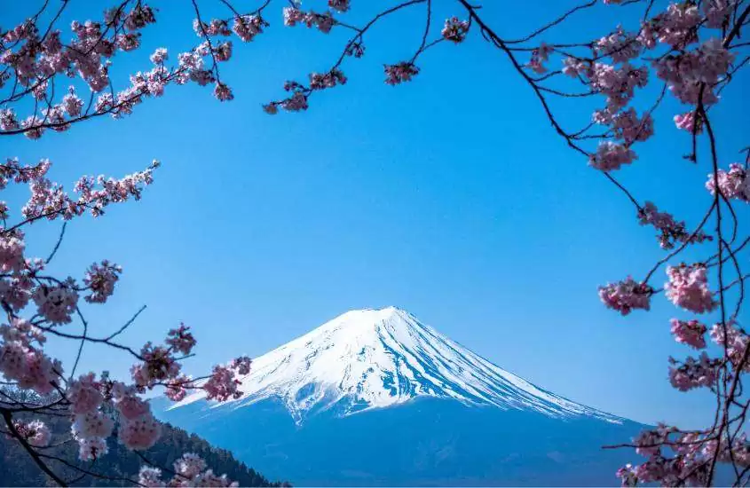
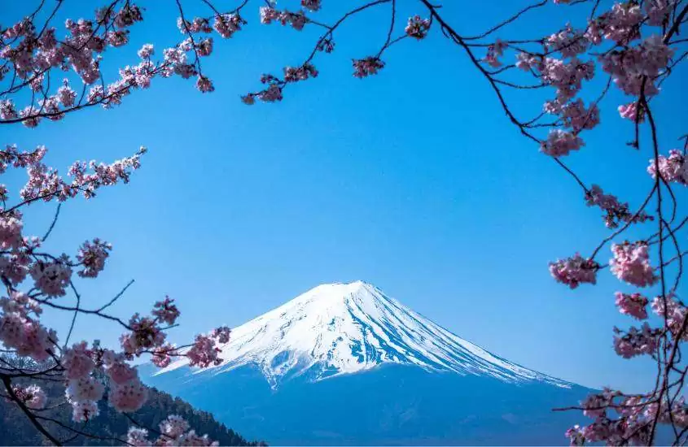

Geografia: O Japão é um arquipélago situado no leste da Ásia, composto por quatro ilhas principais:
Honshu, Hokkaido, Kyushu e Shikoku, além de muitas ilhas menores. O país é montanhoso,
com cerca de 73% de sua superfície coberta por montanhas, sendo o Monte Fuji, um vulcão ativo,
o pico mais alto. O Japão é cercado pelo Oceano Pacífico, Mar do Japão e Mar de China Oriental,
o que o torna propenso a desastres naturais como terremotos e tsunamis.
População: Com uma população de aproximadamente 125 milhões de habitantes,
o Japão é um dos países mais populosos do mundo. A maioria da população vive em áreas urbanas,
com grandes cidades como Tóquio, Osaka e Quioto. O Japão enfrenta desafios demográficos,
incluindo uma taxa de natalidade em declínio e uma população envelhecida,
o que impacta sua força de trabalho e economia.
Clima: O clima do Japão varia de região para região,
mas geralmente é temperado. O país experimenta quatro estações bem definidas:
primavera, verão, outono e inverno. A primavera é famosa pelas flores de cerejeira (sakura),
enquanto o verão pode ser quente e úmido. O outono traz temperaturas amenas e folhas coloridas,
e o inverno é caracterizado por neve em regiões do norte, especialmente em Hokkaido.
As chuvas são mais frequentes no verão, especialmente durante a estação das monções.
 
